Quantile training and other cheap changes lowered the production XGBoost forecast's probabilistic error by about a third at 31 NGED series
A combination of four cheap changes to the production XGBoost forecast lowered its continuous ranked probability score (CRPS) from 11.3% to 7.9% of capacity, and its mean absolute error (MAE) from 12.1% to 10.7%, over a validation year at 31 series in the trial area of National Grid Electricity Distribution (NGED). The four changes are quantile training, a forecast-lead-time column, leaner columns for wind farms, and one XGBoost model per series type with a site identifier. Quantile training gives each of the 51 ensemble members a spread of its own, and lowered CRPS by 2.4 points on its own. Rescaling the members' spread with factors learned from past outcomes is a separate fifth change for point forecasts, and lowered CRPS by 1.3 to 1.9 points. Two other planned changes, the absolute-error objective and early stopping, each lowered CRPS by about 0.4 points on their own. The study chose quantile training, the wind columns, and pooling after seeing the first results, so their gains are biased upward. The page labels them "post hoc".
After the changes, the point forecast beats the manual_heuristic baseline at days 0 to 2 and
ties it at days 3 to 10, and the CRPS still sits above the heuristic's from day 3 on.
Removing the power lags from solar and wind farms, which the plan asked about, made both worse. For solar, the result differs from the lag-features study's day-ahead result (see Round 1).
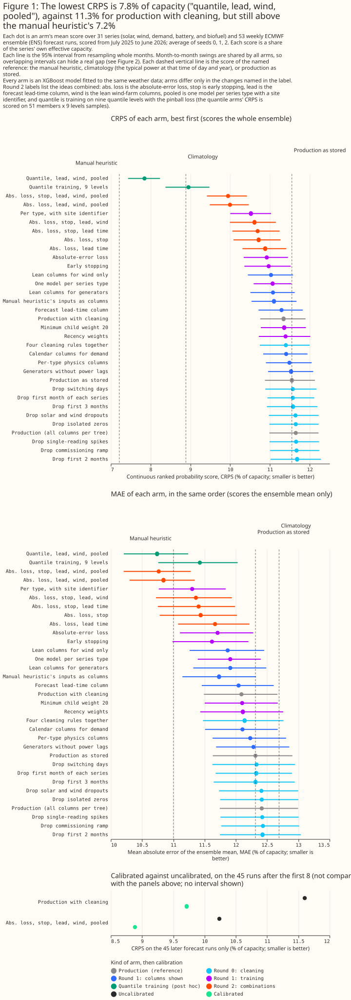
Terms used on this page.
- Production forecast: the point-valued XGBoost forecast in
conf/model/xgboost.yaml. It fits one XGBoost model per series, trains on the control member of the European Centre for Medium-Range Weather Forecasts' (ECMWF) 51-member ensemble (ENS), and runs the model over every member. "Production" in a table means the study's refit of it, and "production with cleaning" adds the cleaning rule chosen in round 0. - Arm: one copy of the production recipe with one named difference, such as a different objective. A combination arm has several differences.
- Points: percentage points of a series' effective capacity, its 99th percentile of absolute power. A difference is an arm's error minus a reference's error, so a negative difference means a lower error.
- CRPS: the fair continuous ranked probability score (Ferro,
2014) of all 51 ensemble members, as
ml_core.metricscomputes it. MAE: the absolute error of the members' mean. Both divide by the series' effective capacity before averaging. Smaller is better for both. - Fold A: the leaderboard fold. Training uses April 2024 to June 2025, and the 12 scored months run from July 2025 to June 2026. Fold B: the same 31 series trained on July 2025 to June 2026 and scored from April 2024 to June 2025.
- Round, seed, control: round 0 compared cleaning rules, round 1 tried ideas one at a time, round 2 combined the winners, and round 3 repeated the key arms on more seeds and on fold B. A seed changes the random row subsampling. The control arm for later arms is production with cleaning, and the control member is the ensemble's unperturbed run.
- Reading the tables:
[a, b]is the 95% interval from resampling whole months, and "12 of 12 months" counts the months in which the arm beat its reference. P0 to P3 are the four planned contrasts (see the Introduction). - ERA5: ECMWF's reanalysis, an estimate of past weather.
- Planned, post hoc: a planned arm was in the plan approved before any fit. A post hoc arm or rule came later, after earlier results or after reading the training data.
manual_heuristic: the baseline forecaster that treats the power at the same weekday and time on each of the last 6 weeks, and 49 to 55 weeks back, as 13 ensemble members. It uses no weather.climatology: the baseline that takes 51 quantiles of past power for each calendar cell.
How this page was made. The research question came from a human. Everything else — the code behind every result, the analysis, the figures, and the text — was written by Claude, Anthropic's AI model (for this page, Claude Sonnet 5.5 and Claude Opus 5.5). Independent Claude reviewers checked the method, the numbers, and the prose. The study had one scientific-validity review by Claude Opus 5.5, where the study's own rules ask for two.
Key findings
- The production forecast has a spread problem and a point-forecast problem, and the spread
problem is larger. The refit's 10% to 90% member band holds the outcome in 10.5% of half-hours,
where an ideal band holds 80%. Its CRPS is 11.3% of capacity, against 7.2% for
manual_heuristic, and its MAE of 12.1% is also above the heuristic's 11.0%. - Quantile training lowered CRPS by 2.4 points, and combined with three other changes by 3.5. The combination scores a CRPS of 7.85% [7.43, 8.24] and an MAE of 10.74% on fold A, averaged over three seeds, and a CRPS 3.44 points lower than production on fold B. The combination's CRPS is the lowest among the arms fitted with three seeds, and 0.6 points above the heuristic's. One arm fitted with one seed, which adds the heuristic's weekly inputs, scores 7.63%. Of the 3.5 points, about 1.3 come from a better point forecast (the MAE falls by 1.35) and about 2.2 from the spread.
- The quantile gain is smaller against spread rescaling, and the quantile forecast's band is still too narrow. Quantile training takes about 8 times longer. Against spread rescaling on the same 45 later runs, the quantile gain is smaller: 0.4 points for the plain arm and about 1.0 for the best arm. The 459-value distribution is still too narrow (57% coverage of a nominal 80% band), and the control member's 9 quantiles alone score 0.33 points better than the crossed sample. The fair CRPS may account for part of that gap, because it gives a set of 9 values a larger spread term than a set of 459.
- The point forecast is good at short leads and loses its edge from day 3. At days 0 to 2 the best point-forecast arm's MAE is 9.5% against the heuristic's 11.3%, and for wind farms 10.0% against 19.2%. The 9.5% and 10.0% figures are point estimates, and the study computed no paired interval against the heuristic. At days 3 to 10 the two tie (10.8% and 10.9%), and from day 11 the heuristic is ahead (11.1% against 11.8%).
- The absolute-error objective and early stopping are the two best planned single ideas. The objective lowers CRPS by 0.42 points [−0.48, −0.37] and early stopping by 0.38 points [−0.52, −0.24], against production with cleaning (fold A, three seeds).
- Leaner columns for wind farms lower wind CRPS by 3.3 points, and a matching cut for solar farms raises solar CRPS. A similar cut for solar farms, and removing the power lags from solar and wind farms, raised their errors.
- Rescaling the ensemble spread lowers CRPS by 1.9 points for production and 1.3 to 1.4 points for the best point-forecast arm (post hoc). The rescaled forecast still scores worse than the heuristic.
- More training months help little beyond 12. Cutting the training window from 15 to 12 months raises CRPS by 0.07 points [−0.01, 0.14], and to 6 months by 0.48.
- Showing the model the 6 weekly analogue observations the heuristic uses helps demand substations a little. The weekly observations lower CRPS by 0.24 points [−0.39, −0.07] over all series.
- Cleaning the training data matters for 2 of 31 series. Dropping every half-hour up to 6 weeks after a new meter first reads live lowers CRPS by 0.31 points. Rules for zeros, spikes, dropouts, switching days, and commissioning ramps changed it by 0.07 points or less.
- Four input columns have faults worth fixing in production, none of which the study tested. Precipitation type is missing from half of the training rows and none of the scored rows, windchill is computed outside its valid range, wind direction and the weekday are fed as numbers that wrap around, and short-wave radiation is positive after sunset.
Why the XGBoost forecast scores worse than the heuristic
The evidence supports four answers, each with a limit.
- Is it a calibration problem? Largely, for CRPS. The 51 members differ only through the weather inputs, so their spread is far narrower than the forecast's real error. Rescaling that spread lowered CRPS by 1.3 to 1.9 points, and quantile training lowered it by 2.4. Calibration alone does not close the gap: the best arm with rescaled spread scores 8.9% on later runs, against the heuristic's 7.4% on the same runs.
- Should we train on CRPS? Quantile loss is the nearest cheap proxy, and it helped on both folds and on every series type except the single biofuel generator. The study did not train on CRPS itself, which needs a custom objective or a neural network, and it did not measure whether the 9 quantile levels are the right number.
- Is the feature pipeline broken? The study found four column faults (see Input features) and did not audit the pipeline beyond that visual check. The point forecast beats the heuristic by 1.8 points of MAE at days 0 to 2, which argues against a gross mis-join, but a lead-dependent or one-hour offset would not be excluded. Some columns still mislead the model: removing 8 columns judged irrelevant to wind farms lowered wind CRPS by 3.3 points, although the matching 11-column cut for solar farms raised solar CRPS by 0.26 points.
- Do we need more years, or an ERA5 first stage? The study cannot say. Over the 15 months available, a longer window helps with diminishing returns: removing the oldest 3 months raises CRPS by 0.07 points on fold A. The 15 months hold one winter, so the gain from a second winter, or from pre-training on ERA5 and then learning the weather forecasts' errors, is untested.
Two tests of "give XGBoost what the heuristic has" are in the results, and a third was not run. First, a combination of the heuristic's members with the XGBoost members lowered CRPS against XGBoost alone but scored worse than the heuristic alone. Second, showing XGBoost the heuristic's six weekly analogue observations lowered CRPS by 0.24 points. A climatology column was not tested, because a climatological mean computed from the training window includes each training row itself, so the follow-up needs a leave-one-week-out construction.
Recommendations for the production forecast
These are the changes to try first, in order of evidence and then effort. "Effect" is the paired CRPS difference against production with cleaning on fold A (three seeds, 12 months), with fold B (15 months, one seed) beside it. Each effect is in points of capacity.
| Order | Change | Planned? | Effect on fold A | Effect on fold B | Effort |
|---|---|---|---|---|---|
| 1 | Train with reg:absoluteerror |
planned | −0.42 [−0.48, −0.37], 12 of 12 months | −0.37 [−0.46, −0.28], 15 of 15 | One config line |
| 2 | Choose the tree count by early stopping on the last 6 training weeks, then refit | planned | −0.38 [−0.52, −0.24], 11 of 12 | −0.77 [−0.98, −0.55], 15 of 15 | Small change in the training loop. Early stopping roughly doubles the CRPS of the single biofuel generator (+1.16 [0.80, 1.54]), so exclude that series or check its score |
| 3 | Train with quantile loss at 9 levels instead of squared error, and score every member times every level | post hoc | −2.39 [−2.52, −2.27], 12 of 12 | −2.60 [−2.74, −2.46], 15 of 15 | Training takes about 8 times longer; the forecast becomes 51 × 9 values. Against spread rescaling on the same 45 later runs the gain is 0.4 points for the plain arm and 0.8 to 1.0 for the best arm (see the quantile section) |
| 4 | Show wind farms fewer columns (drop weekday, radiation, dew point, precipitation type, time of year) | post hoc | −0.32 [−0.38, −0.26], 12 of 12 (wind alone −3.3) | −0.35 [−0.45, −0.25], 15 of 15 | One column list |
| 5 | Add the forecast lead time in hours as a column | planned | −0.05 [−0.08, −0.03], 10 of 12 | −0.08 [−0.11, −0.05], 15 of 15 | Small change. The arm beats a control arm padded with one shuffled column by 0.05 points [0.02, 0.07], so the gain is not an artefact of column count. The gain sits at 48 to 72 hours and in wind farms |
| 6 | Rescale each series' ensemble spread by a factor fitted on past outcomes, for the point-forecast arms | planned idea, post hoc form | −1.9 for production with cleaning, −1.3 to −1.4 for the best point arm (CRPS only) | −1.95 and −1.3 (seed 0) | A post-processing step and a state file |
| 7 | One XGBoost model per series type, with a site identifier | post hoc | −0.82 [−0.96, −0.69], 12 of 12 | −0.51 [−0.81, −0.28], 15 of 15; adds nothing to the best point arm | A new training layout (see the cautions below) |
| 8 | Drop from training every half-hour before a meter has been live for 6 weeks | post hoc | −0.31 [−0.62, −0.06], 9 of 12 months, at 2 series; the t-interval [−0.61, +0.02] includes zero | No effect by construction | A rule in the cleaning step |
Row 7 carries two cautions. The site identifier is the raw series number used as an ordered value. That has not been tested at 2,500 series, so use a categorical identifier or per-site target encoding. On fold B, pooling cut the demand gain from −0.65 to −0.35 (t-interval [−0.87, +0.13]).
The four changes together score a CRPS of 7.85% on fold A, 3.50 points [−3.71, −3.28] below production with cleaning and 3.7 points below the study's refit of the stored production configuration. The combination is quantile training (3), the lead-time column (5), the wind-farm columns (4), and the pooled layout with a site identifier (7), with the cleaning rule (8) already in the control arm. The study did not combine rows 1, 2, or 6 with quantile training (which replaces the row 1 objective), and did not rescale the quantile arm's spread. The best point-forecast arm combines rows 1, 2, 4, 5, and 7 and scores 9.95% [9.41, 10.42], 1.40 points below production with cleaning. Fold B shows no gain from pooling on top of the other point-forecast changes (−1.16 against −1.23), so the pooled layout is the least certain row.
Production's colsample_bytree of 0.8 scored 0.10 points better than 1.0 on fold A and 0.07
points better on fold B. Every contrast on this page uses 1.0, so that arms with different numbers
of columns are compared fairly. A production change should be tested at 0.8 before it ships, because
the combinations here were never fitted at 0.8.
Introduction
The production forecast is a first version, and the cheap ideas for improving it had not been
tried together. The XGBoost improvements page lists them.
The maintainer's starting hunches were that solar farms, wind farms, and substations need different
columns, that the probabilistic forecast needs calibrating, and that a handful of other ideas would
help. The study also tried several ways of cleaning the training data, and the XGBoost settings of
earlier studies on this site (such as min_child_weight 20).
The question came from issue #1150 (Study: quick wins for the production XGBoost forecast). The study changes no production code and uses only the production system's data, which are ECMWF ENS weather forecasts and NGED power. It scores CRPS and MAE and benchmarks every arm against production. During the study, the aim widened from finding quick wins to diagnosing why the XGBoost forecast scores worse than the heuristic, so the page answers that too.
This is a looser study than this repository's study standard. The arms were tried in rounds. Round 0 compared ways of cleaning the training data. Round 1 tried ideas one at a time. Round 2 combined the ideas that won. Round 3 repeated the key arms with two more seeds and on a backwards-in-time fold. After each round, the next round's arms were chosen by judgement, and a later diagnostic round added quantile training, a learning curve, the heuristic's inputs, and a blend with the heuristic's members. The plan named four contrasts: the chosen cleaning against no cleaning (P0), the round 2 combination against production on fold B (P1), per-type physics columns for solar farms only (P2), and spread calibration against the same forecast unrescaled (P3). The results of the four contrasts are in Round 1 (P2), Round 2 (P1), Round 0 (P0), and Calibration (P3). Every other number is exploratory.
Data and methods
Fold A is the leaderboard fold, and every arm is scored on 53 ECMWF ENS runs started every 7 days from 1 July 2025. Each run forecasts out to about 15 days. Scores labelled all leads use every lead to 351 hours. The lead bands are days 0 to 2 (under 72 hours), days 3 to 10 (72 to 263 hours), and days 11 and later. The 31 series are 6 solar farms, 3 wind farms, 16 disaggregated-demand substations, 4 raw-flow substations, 1 battery, and 1 biofuel generator. The study did not submit to the leaderboard scorer, so every score is the study's own.
The study's refit of production on the graphics processing unit (GPU) scores 6.27 MW, against 6.33 MW for the stored production forecast. The stored production forecast scores a CRPS of 6.33 MW on these runs. The refit on the GPU scores 6.27 MW, which is 0.2% below the refit on the central processing unit (CPU), 6.29 MW, and 0.15% below the lowest stored retrain, slightly outside the stored runs' range. The CPU refit is inside that range. Every arm here was fitted on a GPU.
Every arm is the production recipe with one named difference. Production fits one XGBoost model per series, with 24 columns, 500 trees, learning rate 0.05, depth 6, row subsampling 0.8, and squared error, on the control member's rows. The report prints every arm's columns, objective, and cleaning rule. The CRPS of a quantile arm is computed on the sample made of every member crossed with every quantile level, 459 values per half-hour.
Round 0 chose one cleaning rule, and every later arm applies it. The rule drops from the training rows every half-hour before a meter has been live for 6 weeks. "Production with cleaning" is production plus this rule, and it is the control arm for every later contrast. The round 0 section below gives the evidence.
Intervals resample whole validation months, with the same draw for every arm. The 31 series share their weather, so months are the independent units. The page quotes the 95% interval from 2,000 resamples and the number of months in which the arm beat its reference. A percentile interval from 12 months is too narrow, so the months-better count matters. The report also gives a t-interval over the monthly differences.
Three fitting seeds measure the noise of the fit, and it is small. Across seeds the CRPS of any arm varies by at most 0.05 points, against differences of 0.05 to 3.5 points. The seed changes row subsampling only. Fold B was fitted with one seed for most arms and two for four of them.
Fold B is a robustness check. It trains on the validation year and scores the 15 months before the training window, with the same 31 series. Some demand meters did not exist in the early months, so those months average over fewer series. The new-meter rule changes nothing on fold B, so P0 cannot be decided there. Fold B shares series and weather regimes with fold A, so agreement between them does not show that a result holds at other series. Neither fold is cut at ECMWF's ensemble upgrade of 12 November 2024.
Results
Production scores worse than a manual heuristic, and four changes close most of the gap
Figure 1 ranks every arm on fold A, with the stored production forecast, manual_heuristic, and
climatology as reference lines. The best arm scores a CRPS of 7.85% of capacity [7.43, 8.24],
against 11.34% for production with cleaning. Its MAE of 10.74% sits below the heuristic's 11.00%.
Intervals for absolute scores overlap because every arm swings with the weather from month to month.
The paired contrasts are sharper.
Round 1: ideas on their own
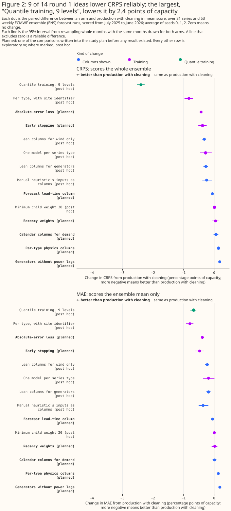
Two planned ideas help clearly, one helps a little, and several did not help. The absolute-error objective and early stopping each lowered CRPS by about 0.4 points. The lead-time column lowered it by 0.05 points. A post hoc cut of 8 columns for wind farms lowered wind CRPS by 3.3 points (row 4 of the recommendations). Recency weights (half-life 120 days) and the holiday and ordinal-day columns for demand series changed CRPS by +0.05 and +0.06 points with intervals that include zero.
Removing the power lags and weekday columns from solar and wind farms raised the error, and adding
physics columns did not undo the rise. The removal raised the error by 0.19 points [0.14, 0.23],
and per-type physics columns added to the removal left it 0.15 points above production with
cleaning. The planned contrast P2, the per-type physics columns for solar farms, raised solar CRPS
by 0.30 points [0.05, 0.56]. An XGBoost model with min_child_weight 20, as in the earlier studies,
changed CRPS by +0.01 points.
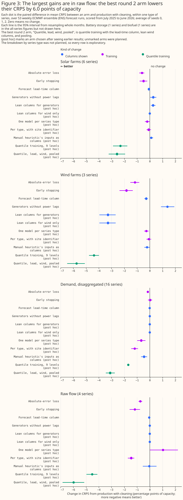
The error falls most in wind farms, raw-flow substations, and solar farms, and the 16 demand substations change least. The objective and early stopping help wind and raw flow most. The pooled model with a site identifier lowers demand error most (−1.18 points) and does little for solar and wind. The absolute-error objective also lowers demand error, by 0.15 points. Three wind farms and four raw-flow series carry many of the gains, so a wind result rests on three farms.
Removing the four power lags raised the CRPS of solar, wind, and demand series, including at day-ahead, which the lag-features study did not find for solar. A post hoc arm removed only the four lag columns (24, 48, 168, and 336 hours) and kept every other column, on all series types (fold A, three seeds). CRPS rose by 0.19 points [0.08, 0.31] for solar farms, 1.33 points [0.95, 1.74] for wind farms, and 0.27 points [0.19, 0.34] for demand. For solar farms the rise is +0.55 points below 24 hours, +0.68 at 24 to 48 hours, +0.09 at 48 to 72 hours, and +0.12 beyond. The lag-features study found that a same-hour lag did not change day-ahead MAE at 6 solar plants. The two studies differ in four ways:
- Lags: four lags here, one there.
- Forecast: 51 members and CRPS here, the ensemble mean and MAE there.
- Rows: half-hourly rows including night here, hourly daylight rows there.
- Model: one XGBoost model per series with 24 columns here, and one XGBoost model per plant there.
Two candidate explanations remain untested, and one caveat limits both studies. First, production's 24-hour lag is blanked at leads of 24 hours or more, so at day-ahead only the 48-hour, 168-hour, and 336-hour lags are available, and the 168-hour and 336-hour lags may carry weekly regime information that the lag-features study's single 2-day lag does not. Second, the lag-features study scored the ensemble mean by MAE, while this study scored CRPS over 51 members, where a lag may mainly sharpen the members' spread. The caveat is that the solar result here rests on 6 farms in one weather region, as the lag-features result does, so neither is a statement about a seventh plant. A follow-up should run both setups on identical rows and score both by MAE and CRPS. This study cannot say which difference explains the gap.
The weekday columns do not explain the lag result, and the lags should stay in production. The earlier arm that also removed the weekday columns gave almost the same losses (solar +0.27, wind +1.38). Do not remove the lags in production on the strength of the lag-features study.
Round 2: combining the winners
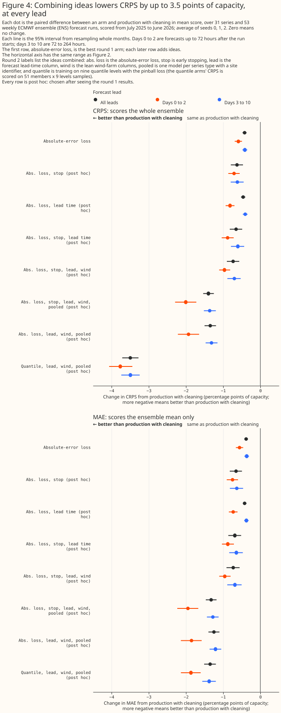
The combination arms add one change at a time, in an order chosen by judgement from the round 1 table. The absolute-error objective with early stopping lowers CRPS by 0.63 points. Adding the lead-time column brings the total to 0.65 points, and adding the wind-farm column cut brings it to 0.73 points. Adding the pooled layout brings it to 1.40 points on fold A.
On fold B, the round 2 combination lowers CRPS by 1.16 to 1.23 points (P1). The point-forecast arms without pooling reach 1.23 points, and pooling gives 1.16, which is no gain. The lowering holds in both lead bands: on fold B the best arm lowers CRPS by 1.75 points at days 0 to 2 and 1.19 at days 3 to 10. P1, the round 2 combination against production on fold B, is −1.16 points [−1.67, −0.72] for the pooled combination and −1.23 [−1.50, −0.97] for the combination without pooling.
Round 0: data cleaning, chosen before every later round
Seven rules were tried, four named in the plan and three written after an exploratory read of the training window. The plan named the first-N-months, isolated-zero, spike, and commissioning-ramp rules. A read of the training months (April 2024 to June 2025) only, with no validation data, led to three more: new-meter settling, solar and wind dropouts, and switching days. The read flagged late-starting meters, multi-day steps in some demand series, a staged solar commissioning, and solar dropouts while the other farms produced. The notes of that read are not part of the report, so the page quotes only what each rule drops.
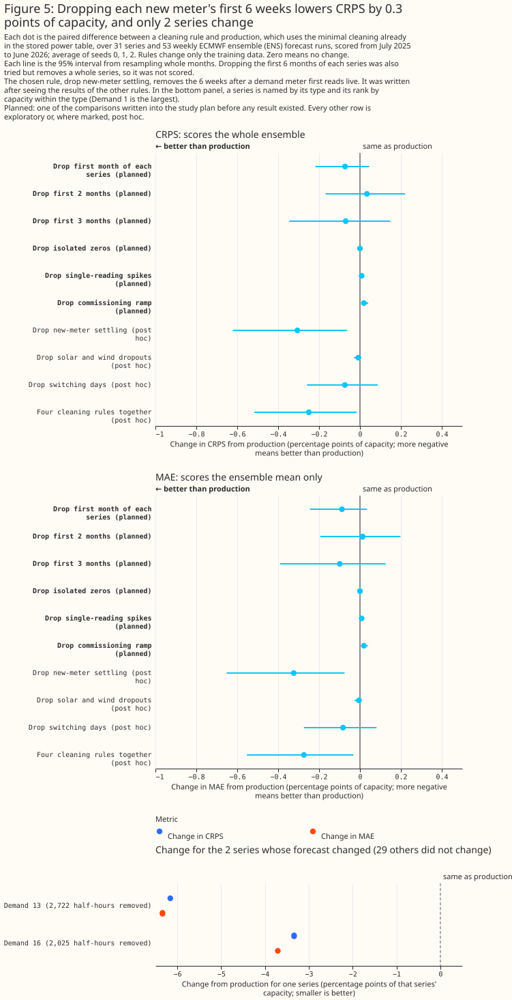
Only the new-meter rule lowered CRPS by more than 0.1 points on its own, and it changed only 2 demand series. The rule drops every half-hour up to 6 weeks after a series first has 48 consecutive half-hours above 5% of its capacity. It removes 4,747 training half-hours from 2 demand series, and lowers the mean CRPS by 0.31 points [−0.62, −0.06] (9 of 12 months) against production (P0, fold A). The t-interval over the monthly differences, [−0.61, +0.02], includes zero. The other 29 series are unchanged.
Every other rule that could be scored changed CRPS by 0.07 points or less. The first-1, first-2, and first-3-months rules scored −0.07, +0.03, and −0.07 points with intervals that include zero, and the first-6-months rule, which removes 19,838 half-hours from 4 series, could not be scored because it leaves one demand series with no training rows. The isolated-zero and spike rules changed CRPS by 0.00 and +0.01 points. The commissioning-ramp rule removed 8,866 half-hours of one solar farm and raised the error by 0.02 points [0.01, 0.04]; the study did not test why. The solar-dropout and switching-day rules scored −0.01 and −0.07 points, and the combination of the new-meter, ramp, dropout, and switching rules scored −0.25 points [−0.52, −0.02]. We chose the new-meter rule as the cleaning for every later arm. Its value is for series the system will meet in future, because the two series it helps began in early 2025. It was written after reading the training months (post hoc), and fold B cannot test it.
Quantile training: the spread and the point forecast improve together
Training each series' XGBoost model with quantile loss at 9 levels (0.1 to 0.9) gave the largest single gain. To score it, every ensemble member is crossed with every level, so each half-hour has 459 values. On fold A the quantile arm scores a CRPS of 8.95% [8.37, 9.48] against 11.34%, which is −2.39 points [−2.52, −2.27] (12 of 12 months), and a CRPS 2.60 points lower on fold B [−2.74, −2.46]. Every series type gains: −1.69 for demand, −2.30 for solar, −4.38 for wind, and −4.52 for raw flow.
Adding the lead-time column, the wind-farm columns, and pooling with a site identifier gives the best arm, a CRPS of 7.85% and an MAE of 10.74%. On fold B the difference from production is −3.44 points [−3.98, −3.00].
Adding the heuristic's weekly inputs to the best arm lowered CRPS by a further 0.2 points on seed 0 (7.63%) and on fold B. On seed 0 the paired contrast between the two arms is −0.22 points [−0.38, −0.06] on fold A (8 of 12 months better) and −0.22 [−0.61, +0.54] on fold B (11 of 15), with solar and wind farms worse and demand better. The arm is post hoc.
Quantile training has two drawbacks. Training takes about 8 times longer (see the training-time section), and the 9 levels and the equal weighting of the 459 values are untuned.
The gain over spread rescaling is smaller than the gain over raw production. On the 45 later runs that the rescaling can be scored on (seed 0, fold A), the quantile arm scores a CRPS 0.44 points lower [−0.53, −0.37] than rescaled production with cleaning (11 of 11 months). On those 45 runs, the best quantile arm scores 7.81% against 8.89% for the best rescaled point-forecast arm, which is 1.05 points lower [−1.27, −0.84] (11 of 11 months). The quantile arms were not rescaled, so these gains are conservative.
Crossing the quantiles with the 51 members is not clearly the right way to issue the forecast. The 459-value sample holds the outcome in 57% of half-hours for a 10% to 90% band (nominal 80%): 80% for solar farms, 59% for wind farms, 50% for demand substations, and 39% for the biofuel generator. The 9 quantiles of the control member alone score a CRPS 0.33 points lower [−0.35, −0.30] than the 459-value sample (12 of 12 months), on every series type. The fair CRPS may account for part of that gap. It divides its spread term by m(m − 1), where m is the number of values, instead of by m². That multiplies the spread term by m/(m − 1), which is 9/8 for 9 values and 459/458 for 459, and a larger spread term lowers the score, so the smaller set gains an advantage. The 9 levels (0.1 to 0.9) are also not the midpoints of 9 equal-probability bins, which would run from 0.056 to 0.944. Score both sets with the same CRPS estimator before reading the gap as a real difference.
The study did not test why the crossed sample is too narrow. One candidate cause, that crossing the quantiles with the members counts the weather uncertainty twice, would make the sample too wide, not too narrow. A likelier cause is in-sample fitting: the XGBoost quantile models learn smaller residuals on the rows they were fitted on than they produce on later runs. After the like-for-like re-score, and before quantile training is re-implemented in production, test issuing the control member's quantiles, with or without the members' spread.
Calibration: the ensemble spread is far too narrow
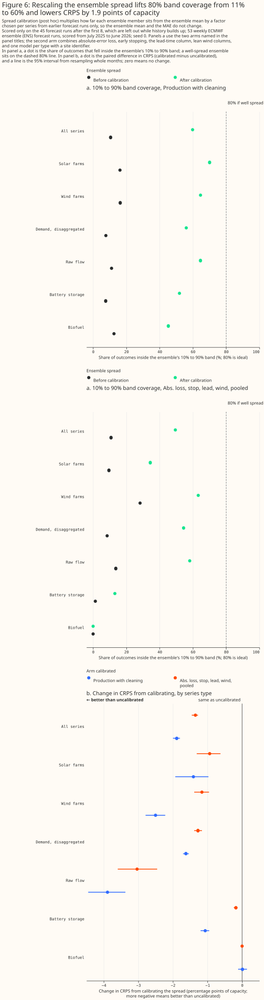
The production ensemble's 10% to 90% band holds the outcome in about one half-hour in ten. The members differ only by the weather inputs, so their spread reflects the weather forecast's uncertainty and not the XGBoost model's own error. We rescaled each series' members about their mean by a factor from a fixed grid (0.6 to 12). Each run's factor is the one with the lowest CRPS for that series on earlier runs, using only outcomes whose valid time precedes the run's initialisation time. The first 8 weekly runs are dropped from both sides of the contrast. The mean, and so the MAE, does not change.
The rescaled forecast scores a CRPS 1.9 points lower for production with cleaning and 1.3 to 1.4 points lower for the best point-forecast arm, with the same sign in all three seeds and on fold B (P3). On fold A, CRPS falls from 11.60% to 9.71% for production with cleaning, and from 10.24% to 8.89% for the best point arm, on the 45 later runs. On fold B it falls from 11.95% to 10.00% and from 10.76% to 9.50%. The band holds 60% of outcomes for production and 49% for the best point arm, still under 80%.
The grid's largest factor (12) was chosen for about a third of the series and runs of production, so a wider grid might lower the CRPS further.
The rescaled forecast still scores worse than the heuristic. On the same 45 later runs the heuristic scores 7.4%, against 8.9%.
Example forecasts
Figures 7 to 10 show the forecasts themselves for four series, Figure 11 shows the 10% to 90% band, and Figure 12 shows error by lead day, for runs chosen by the actual power and not by the forecast error. Each series is the one ranked in the lower middle of its type by the CRPS of production with cleaning. Each panel shows the ensemble mean of several arms against the measured power, as a share of the series' capacity, for one run of the weekly sample. The solar and wind farms are anonymous. The axes count days from the run's start and show no dates.
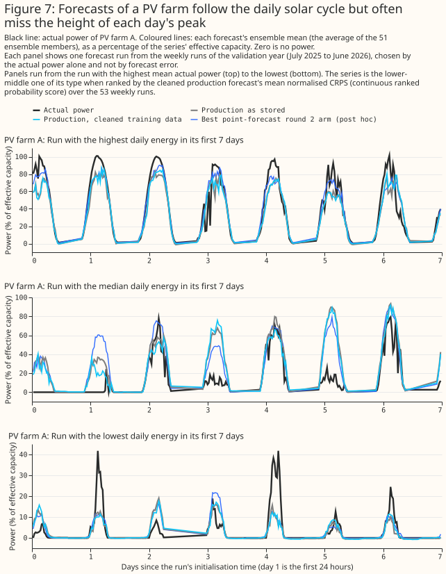
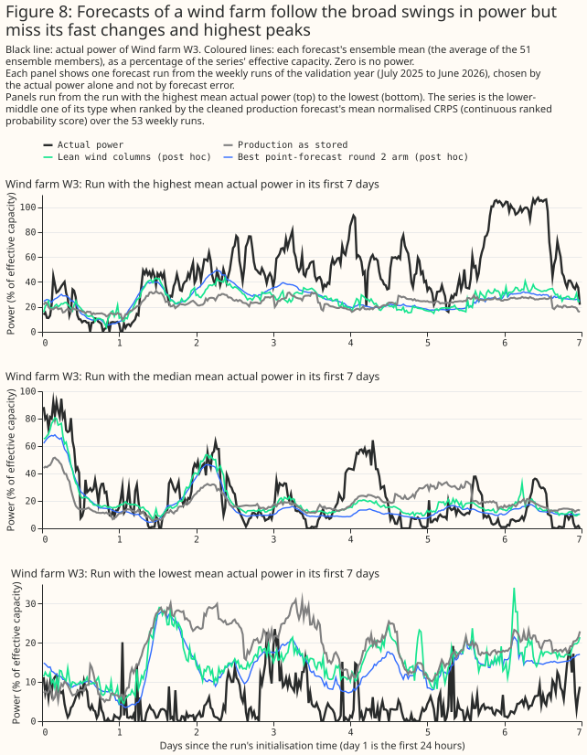
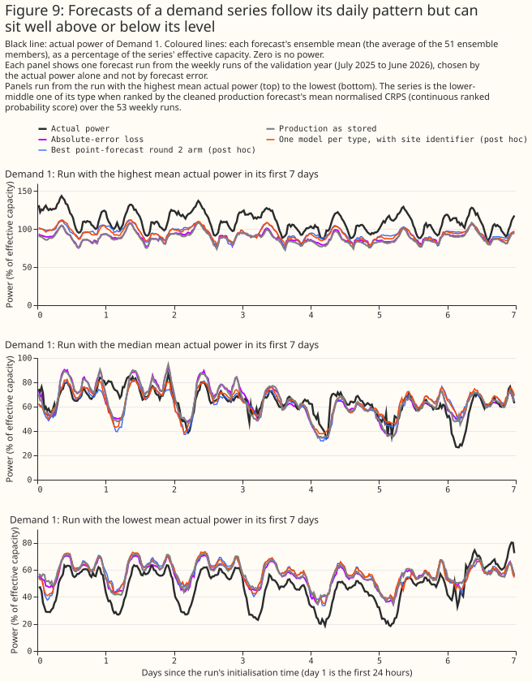
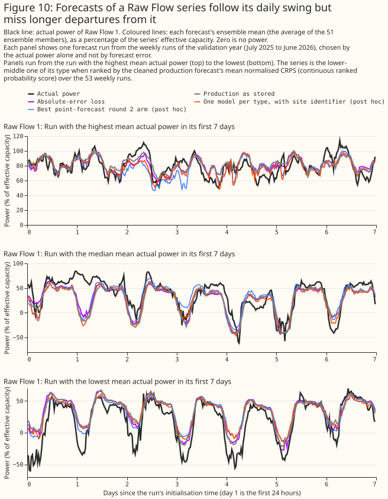
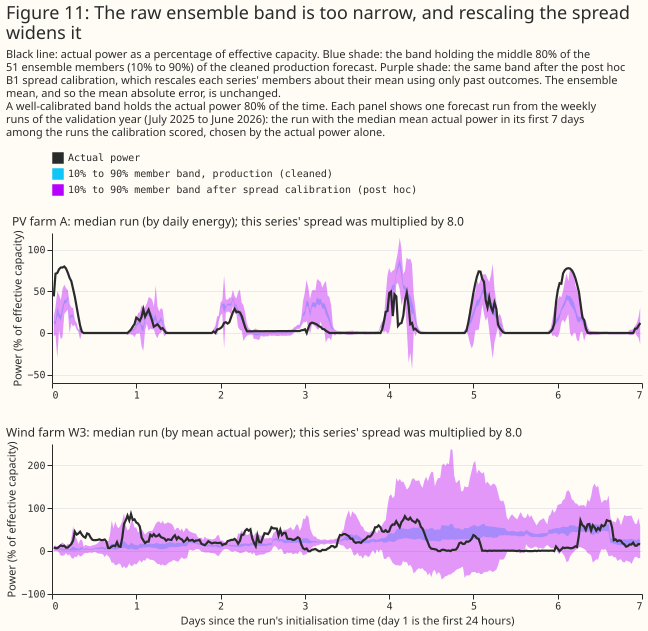
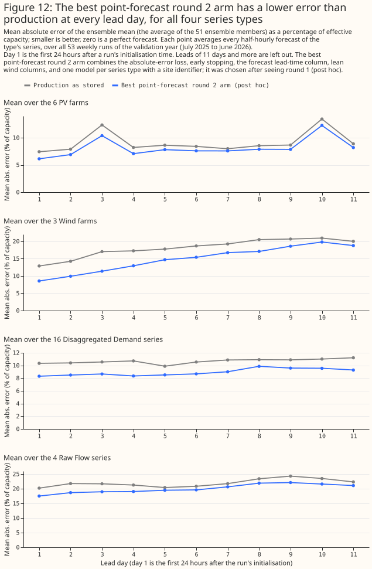
Comparing with the heuristic, and the length of the training window
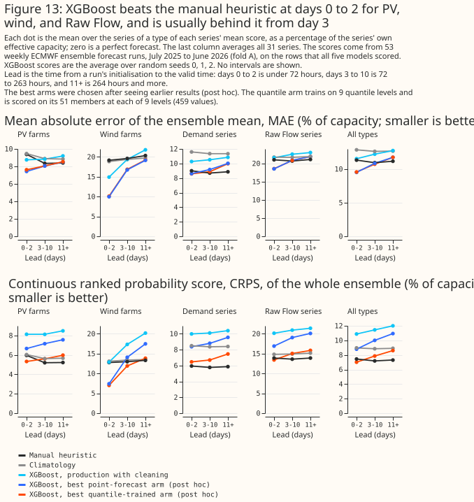
The best arms beat the heuristic's MAE at days 0 to 2, fall level with it at days 3 to 10, and fall behind it from day 11. For all 31 series, the best point arm's MAE is 9.5% at days 0 to 2 against 11.3% for the heuristic and 12.9% for climatology. At days 3 to 10 the best arms score 10.7% to 10.8% against 10.9%, and at days 11 and later 11.7% to 11.8% against 11.1%. For wind farms the gap at days 0 to 2 is 10.0% against 19.2%, since the heuristic uses no weather. For demand substations the heuristic leads at every lead: its CRPS is 5.7% to 5.8% against 6.4% to 7.4% for the best quantile arm.
Mixing the heuristic's members into the XGBoost ensemble did not beat the heuristic alone. On the runs where the heuristic has a forecast, production with cleaning scores 11.33%, the heuristic 7.21%, and a blend of the 51 XGBoost members with the heuristic's 13 members 9.97%. With each heuristic member repeated 4 times, the blend scores 8.52%. For the best point arm, the plain blend scores 8.93% and the blend with each heuristic member repeated 4 times scores 7.92%. Each blend is better than XGBoost alone, and worse than the heuristic alone except for wind farms, where the equal-weight blend with the best point arm scores 12.5% against 13.0% for the heuristic. The study did not test why the blend beats XGBoost alone, and blended only seed 0 of production with cleaning and of the best point arm.
Showing XGBoost the heuristic's weekly inputs helped demand substations a little. Adding the 6 weekly analogue observations and their mean, median, minimum, and maximum lowered CRPS by 0.24 points [−0.39, −0.07] (9 of 12 months), and by 0.45 points [−0.69, −0.21] for demand, with the same sign on fold B (−0.60 overall, −0.94 for demand). The weekly inputs raised solar CRPS by 0.12 points on fold A.
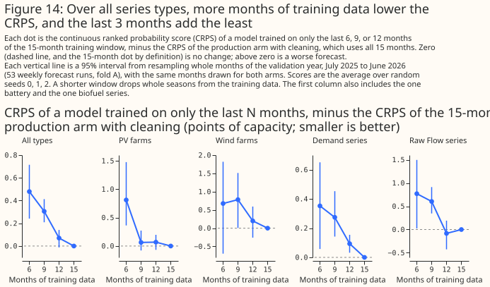
A longer training window helps, with diminishing returns. Training on the last 12 months of the 15 raises CRPS by 0.07 points [−0.01, 0.14], on the last 9 months by 0.31 [0.21, 0.41], and on the last 6 months by 0.48 [0.24, 0.71]. On fold B (12 training months), the last 9 and 6 months raise CRPS by 0.40 and 0.68. Wind and raw-flow series are noisier than the all-types curve. The shorter windows drop whole seasons, so the curve mixes the effect of fewer months with the effect of fewer seasons.
Input features: a visual check of the feature engineering
The input columns look right apart from four faults, found by plotting every column for one forecast run of four example series and by checking null shares and ranges for all 31 series (Figure 18). The lag alignment is correct: for the demand series in the drawn run, each lag column equals the cleaned power at the valid time minus the lag, with a maximum difference of 0. The four faults are worth fixing in production, and the study tested none of them. No column is constant apart from the UTC offset.
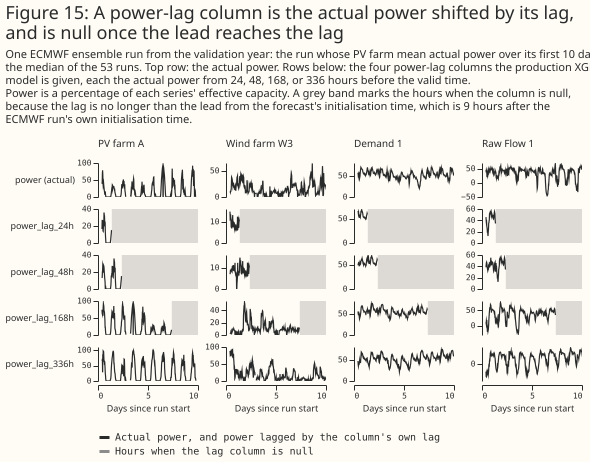
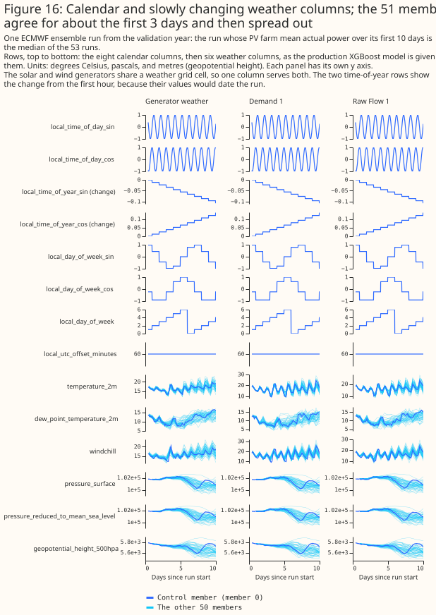
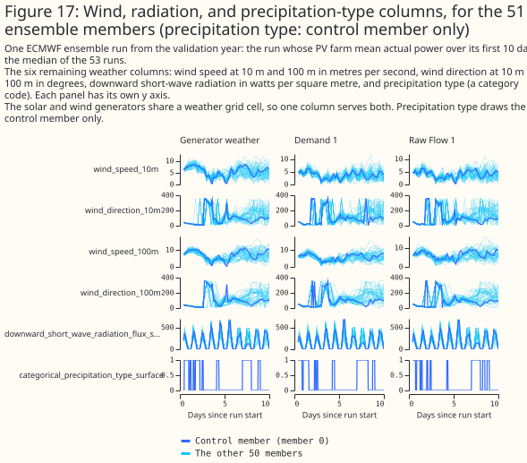
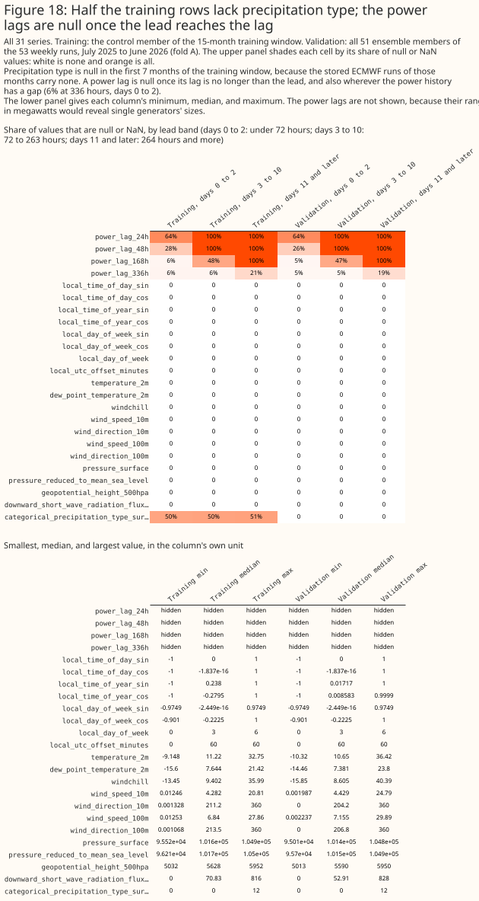
Precipitation type is missing from 50% of the training rows and from none of the scored rows. The column is null for every ECMWF run initialised before 13 November 2024, which is 7 of the 15 training months. The model therefore trains with half the column missing and is scored with none missing. The first run with the column is one day after ECMWF's ensemble upgrade of 12 November 2024. The study did not test whether the upgrade is the cause, or whether dropping the column or the early months changes the score.
Windchill is computed outside the range where its formula is valid. The formula applies at 10 °C or below with wind of at least 4.8 km/h, and production applies it everywhere. Windchill exceeds the air temperature in 18% of the rows at 10 °C or above.
Short-wave radiation is positive after sunset. In December training rows its median is 14.2 W/m² at 20:00 UTC and 2.6 W/m² at 23:00 UTC. In all training rows, 82% exceed 1 W/m². The study did not verify the likely cause, interpolation of the 3-hourly and 6-hourly accumulated fields.
Wind direction and the weekday are fed as numbers that wrap around. Wind direction is in raw degrees, so the control member jumps between 0 and 360, and the sine and cosine of the direction are the usual replacement. The weekday column is an ordinal from 0 to 6 that jumps from Sunday back to Monday.
The 336-hour power lag is null for about 6% of the rows at days 0 to 2 because of gaps in the power history. The nulls are not join failures.
Training time at 2,500 series
Training time grows linearly with the number of series for one XGBoost model per series, and memory becomes the limit for one XGBoost model per series type. The table gives the median training time of each arm at the study's 31 series on one GPU, and a straight multiple of 80.6 for 2,500 series. The estimate assumes each series keeps the same length of history, so it is a rough guide, not a measurement. The peak memory of training one arm was about 8 GB.
| Layout | Arm | 31 series, GPU | 2,500 series, GPU (estimate) |
|---|---|---|---|
| One model per series | squared error (production) | 37 s | 50 min |
| One model per series | absolute error | 41 s | 55 min |
| One model per series | early stopping | 22 s | 30 min |
| One model per series | 9 quantile levels | 5 min | 6.9 h |
| One model per series type | squared error, site identifier | 18 s | 24 min |
| One model per series type | absolute error and early stopping | 24 s | 33 min |
| One model per series type | 9 quantile levels | 2 min | 3.0 h |
The per-type estimates are lower bounds, because 2,500 series of rows do not fit in GPU memory. On 8 CPU cores the production recipe trained in 141 s at 31 series, so about 3.2 hours at 2,500 series. The 31 series hold 9.76 million training rows, so 2,500 series of the same length would hold about 790 million rows, which does not fit in 30 GB of GPU memory as one table per type. The per-type estimates therefore need row subsampling, chunking, or external memory, and the per-type time is a lower bound.
One model per series type also changes the serving cost. The 2,500 saved XGBoost models become about 6, but each prediction run feeds every series through a larger XGBoost model.
Building the feature frame for 2,500 series needs chunking by series. The study's frame for 31 series took 5 minutes 19 seconds and 5.3 GB, which extrapolates to about 7 hours and 430 GB in one process.
What did not help
These ideas were tried and are not recommended. Numbers are fold A, three seeds where stated, as CRPS differences against production with cleaning.
- Removing the power lags and weekday columns from solar and wind (planned): +0.19 points [+0.14, +0.23], with the loss largest at days 0 to 2.
- Adding solar, wind, and heating physics columns to the lag and weekday removal (planned): +0.15 points, which is 0.04 points better than removing the lags alone.
- Lean columns for solar farms (post hoc): +0.26 points for solar [+0.10, +0.45].
- Recency weights, half-life 120 days (planned): +0.05 points [−0.06, +0.15].
- Holiday and ordinal-day columns for demand (planned): +0.06 points [−0.01, +0.14].
min_child_weight20 (post hoc): +0.01 points.- One model per type without a site identifier (post hoc): −0.28 points [−0.46, −0.07], a small gain that raises raw-flow error by 1.04 points.
- The first-N-months, isolated-zero, spike, commissioning-ramp, solar-dropout, and switching-day cleaning rules (round 0): each scored rule changed CRPS by 0.07 points or less.
Ideas left for future research
Issue #1156 plans experiments on several of the ideas below: the two-stage forecaster, the climatology column, the feature faults, the transfer ratio and daily shape, issuing the control member's quantiles directly, training on CRPS, and features from the ensemble itself.
- A two-stage forecaster: train a first stage on ERA5 for many years, then a second stage on the ECMWF forecasts' errors, as described on the switching-events roadmap page. The study's learning curve cannot say whether extra years help.
- A climatology column, built so that a training row's own value never enters its own climatological mean.
- Fix and test the feature faults listed under "Input features": precipitation type missing for half the training rows, windchill outside its valid range, wind direction as raw degrees, and radiation positive at night. See the follow-up feature audit for diagnosis and forecast effects.
- The transfer ratio and daily shape of each plant, for pooled models: the transfer ratio (power over forecast irradiance) and daily shape from the lag-features study, in place of a raw site number. In that study, the clipping ceiling (the plant's running 99.5th percentile and 60-day maximum of power) raised the error for plants left out of training.
- Issuing the control member's quantiles directly, with or without the members' spread, because the 9 control quantiles scored better than the 459-value crossed sample.
- Training on CRPS itself, with a custom objective or a neural network.
- A residual-based predictive distribution: draw each member's value as the point forecast plus a sample of past residuals for the series, season, and lead.
- Training on every member, or on the ensemble mean, so the model sees the spread. The study did not fit an ensemble-mean arm.
- Features from the ensemble itself: member spread and quantiles.
- Monotone constraints on the weather inputs for solar and wind, which force the forecast not to fall as, for example, radiation rises.
- A blend with climatology at long leads, which the lag-features study found lowered error by 1.2 points at day 14 for 6 solar plants (a post hoc result of that study).
- Tuning depth, learning rate, and the number of trees, which the study left at production's values.
- The auto-research agent, a large language model agent for automated experiments described in issue #1038 could take the cheap, repeatable arms here, since each changes a configuration and is scored the same way.
Limitations
- The scope is 31 NGED series in the trial area, scored for one year and a backwards fold of 15 months. The 6 solar farms are close together and share their weather, and so do the 3 wind farms. A wind result rests on 3 farms.
- The two folds are not independent. Fold B uses the same series, and weather regimes recur.
- Several ideas and every combination arm were chosen after the first results. The gain of the winning arm on fold A is biased upward. Fold B repeats the direction at a similar size.
- The scores are not leaderboard scores. The study did not submit to the scorer. Its 53-run
sample is a subset of the leaderboard's runs. Its quantile arms also number
ensemble_memberfrom 0 to 458, a range that the leaderboard'spower_forecaststable cannot hold in its Int8ensemble_membercolumn. - Nothing was fitted at
colsample_bytree0.8 except the production arm. - The quantile arms use 9 untuned levels and weight every member and level equally, and the resulting 459-value distribution is too narrow (57% coverage of a nominal 80% band). The control member's 9 quantiles and the 459-value crossed sample were scored with the same fair CRPS, which gives the smaller set a larger spread term, so the comparison of those two sets may not be like for like.
- Calibration by rescaling is evaluated for CRPS only, on the later 45 of 53 runs, and rescaling the weather ensemble's spread does not make the forecast a proper predictive distribution.
- One demand series reads negative throughout and has a large error, so the mean over series is sensitive to it.
- Neither fold is cut at ECMWF's 12 November 2024 ensemble upgrade.
- The study checked the input columns visually but did not audit the feature pipeline, and did not check the stored production run's MLflow configuration, because none was registered.
Data and code availability
The scripts are in
studies/quick_wins/,
and the tests are in packages/studies/tests/quick_wins/. report_summary.py prints the tables
this page quotes into summary.md, and report_compute.py prints the training-time table. The
input data are private. The commands that reproduce the study are in the folder's README.